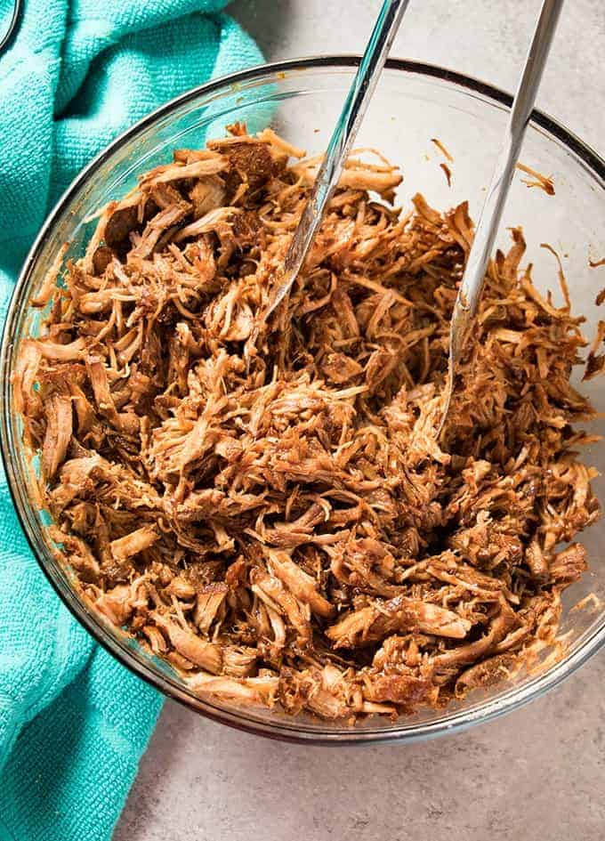

Pulled pork is a very simple dish to make at home, and there are a few ways to make it even more quick and easy.
Once you have seasoned your meat, you will mix up your wet ingredients. I prefer to use broth over water for added flavor. Use your favorite type of barbecue sauce, and then a bit of apple cider vinegar. The vinegar not only adds great flavor, but, the acid helps to tenderize the meat as it cooks!
After you have seasoned your meat, and mixed up your wet ingredients it's time to get cooking!
Ingredients:
- 1 Tablespoon Packed Brown Sugar
- 2 Teaspoons Paprika
- 2 Teaspoons Garlic Powder
- 2 Teaspoons Onion Powder
- 1 Teaspoon Salt
- 1 Teaspoon Pepper
- 1/2 Teaspoon Cumin
- 1/4 Teaspoon Cayenne, Optional
- 3 Pound Boneless Pork Roast, Cut into 3-4 inch cubes
- 2 Tablespoons Olive Oil
- 1/3 Cup Apple Cider Vinegar
- 2 Cups Barbecue Sauce, Divided
- 1 1/4 Cup Chicken or Beef Broth
- 1 Teaspoon Hot Pepper Sauce, Optional
Directions
- In a small bowl mix together the brown sugar, paprika, garlic powder, onion powder, salt, pepper, cumin, and cayenne.
- Season the cubed pork with the spice mixture and set aside.
- In a medium bowl whisk together the apple cider vinegar, one cup of the barbecue sauce, the hot pepper sauce if using, and one cup of the broth.
- Turn your instant pot to the saute setting. Add the olive oil and allow it to get hot.
- Add half of the cubed pork to the hot oil and saute for 5 minutes, turning to brown on all sides. Remove the browned pork to a plate and repeat with the remaining half of the cubed pork.
- Turn the instant pot off. Use the remaining ¼ cup of beef broth and a wooden spoon to deglaze (scrape the brown bits) from the bottom of the pot.
- Add all of the meat along with the barbecue sauce mixture to the instant pot.
- Close the lid and set to sealing.
- Cook on manual high pressure for 40 minutes. Once the cooking time is up, allow the pressure to release naturally for 10 minutes, then do a quick release.
- Remove the meat from the instant pot and shred. Stir in the remaining cup of bbq sauce and serve on buns as desired.